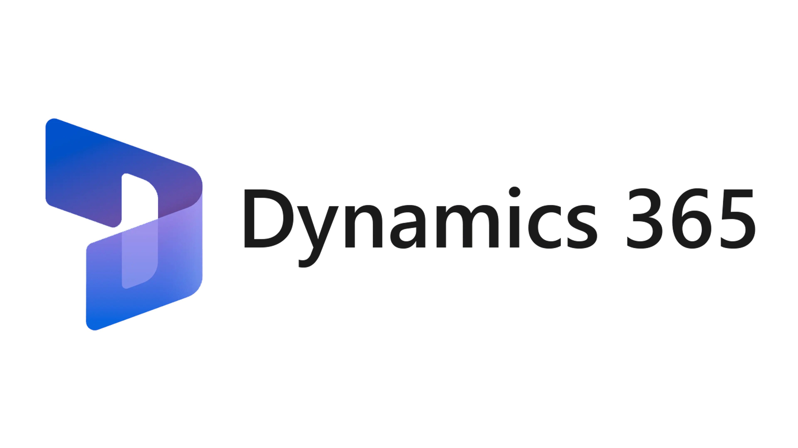
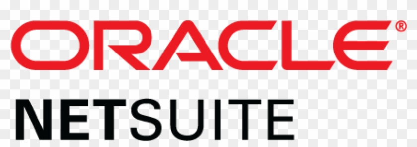

Aceleramos Tu transformación digital
En Aceleratik impulsamos la innovación tecnológica para que empresas de todos los sectores evolucionen, crezcan y se mantengan competitivas en la era digital.
¿Quiénes somos?
Somos una empresa de consultoría tecnológica fundada con el objetivo de impulsar la innovación en múltiples industrias.
En Aceleratik, combinamos expertise técnico con una visión estratégica y conocimiento sectorial para diseñar soluciones digitales que impulsan la evolución de negocios tradicionales hacia modelos más ágiles y competitivos.
Nos enfocamos en entender a fondo las necesidades de cada cliente y acompañarlo con estrategias tecnológicas personalizadas que generen impacto concreto y sostenible.
Nuestros valores
Innovación
Buscamos constantemente nuevas formas de resolver problemas complejos mediante tecnología de vanguardia.
Colaboración
Trabajamos de la mano con nuestros clientes para entender sus necesidades y crear soluciones conjuntas.
Resultados
Nos enfocamos en generar impacto medible y valor tangible para nuestros clientes.
Innovación
Buscamos constantemente nuevas formas de resolver problemas complejos mediante tecnología de vanguardia.
Colaboración
Trabajamos de la mano con nuestros clientes para entender sus necesidades y crear soluciones conjuntas.
Resultados
Nos enfocamos en generar impacto medible y valor tangible para nuestros clientes.
Nuestra trayectoria
2023
FundaciónFundación de Aceleratik con enfoque en consultoría tecnológica.
2024
CrecimientoPrimeros proyectos exitosos de transformación en empresas pequeñas.
2024
AlianzasAlianzas estratégicas con proveedores tecnológicos líderes en el mercado.
2025
ExpansiónExpansión del equipo y desarrollo de metodologías propias de transformación digital.
2025
ActualidadInicio del proyecto deCampoaCampo, nuestro mayor desafío hasta la fecha.
2023
Fundación de Aceleratik con enfoque en consultoría tecnológica.
2024
Primeros proyectos exitosos de digitalización en empresas pequeñas.
2024
Alianzas estratégicas con proveedores tecnológicos líderes en el mercado.
2025
Expansión del equipo y desarrollo de metodologías propias de transformación digital.
2025
Inicio del proyecto deCampoACampo, nuestro mayor desafío hasta la fecha.
Nuestro equipo
Franco Fabbri
Product Owner
Product Owner con 2 años de experiencia en proyectos de transformación digital. Coordina las prioridades del proyecto y actúa como enlace entre los stakeholders y el equipo de desarrollo.
Pablo Burgos
Scrum Master
Scrum Master con 3 años de experiencia en metodologías ágiles. Facilita los procesos del equipo, elimina impedimentos y asegura que se sigan las buenas prácticas de Scrum.
Agustin Ruiz
Financial Analyst
Financial Analyst con 2 años de experiencia en el sector tecnológico. Analiza la viabilidad económica del proyecto y asesora en decisiones financieras que impactan el desarrollo.

Juan Ignacio Geiler
Technical Analyst
Technical Analyst con 1 año de experiencia. Evalúa soluciones técnicas, documenta requerimientos y ayuda a determinar la factibilidad de implementación de nuevas funcionalidades.
Nicolas Leotta
Business Analyst
Business Analyst con 3 años de experiencia. Identifica necesidades de negocio y las traduce en requerimientos técnicos, facilitando la comunicación entre el cliente y el equipo de desarrollo.
Camila Benítez
Data Analyst
Data Analyst con 2 años de experiencia. Recopila y analiza datos para extraer insights valiosos que apoyan la toma de decisiones y mejoran las estrategias del proyecto.
Marco Quintero
ERP Consultant
ERP Consultant con 3 años de experiencia. Asesora en la implementación y personalización de sistemas de gestión empresarial, optimizando procesos de negocio y flujos de trabajo.
Enfoque de nuestra consultoría
Diagnóstico
Análisis integral del negocio para identificar cuellos de botella y oportunidades
Mapeo de procesos
Documentación y comprensión de los procesos clave del negocio
Soluciones TI
Recomendaciones tecnológicas personalizadas para resolver problemas específicos
Acompañamiento
Soporte en la selección de proveedores y supervisión de implementaciones
Diagnóstico
Análisis integral del negocio para identificar cuellos de botella y oportunidades
Mapeo de procesos
Documentación y comprensión de los procesos clave del negocio
Soluciones TI
Recomendaciones tecnológicas personalizadas para resolver problemas específicos
Acompañamiento
Soporte en la selección de proveedores y supervisión de implementaciones
Proyecto destacado deCampoaCampo
Desde Aceleratik, estamos llevando adelante un proyecto junto a deCampoaCampo que tiene como objetivo evaluar su situación actual y acompañarlos en un proceso de transformación digital alineado con sus objetivos estratégicos.
Sobre deCampoaCampo
deCampoaCampo es un mercado ganadero digital fundado en 2010 que comercializa hacienda en todo el país las 24 horas del día, operando como una unidad de negocios de la firma consignataria Pedro Genta y Cía. SA.
La plataforma permite la publicación y comercialización de tropas de ganado de todo el país, tanto para faena como para invernada, cría y recría, con gran fluidez y un manejo eficiente de la documentación.
Además de ser una herramienta comercial para la compra y venta de ganado, deCampoaCampo funciona como una herramienta de gestión donde se almacena información valiosa sobre condiciones comerciales, resultados de faena, tendencias de precios y otros datos útiles para el sector ganadero.

Datos clave
Objetivos estratégicos
En ésta etapa inicial, el objetivo es comprender en profundidad los desafíos actuales y relevar las necesidades del negocio. A partir de ese análisis, se buscará identificar oportunidades de mejora que estén alineadas con los siguientes objetivos estratégicos definidos por deCampoaCampo:
Crecimiento del mercado
Aumentar la participación en el mercado ganadero en un 15% en 5 años, multiplicando por cinco el volumen actual de operaciones.
Liderazgo del sector
Superar al Mercado de Liniers como principal referente ganadero, impulsando un cambio cultural en el sector mediante la propuesta digital.
Expansión internacional
Regionalizar los servicios digitales para ganar participación en mercados internacionales y facilitar negociaciones transfronterizas.
Crecimiento del mercado
Aumentar la participación en el mercado ganadero en un 15% en 5 años, multiplicando por cinco el volumen actual de operaciones y consolidándose como actor relevante en el sector.
Liderazgo del sector
Superar al histórico Mercado de Liniers como principal referente de comercialización ganadera, impulsando un cambio cultural mediante una propuesta digital moderna, eficiente y de alcance federal.
Expansión internacional
Regionalizar los servicios digitales expandiéndose más allá de las fronteras nacionales para ganar participación en mercados internacionales y facilitar negociaciones transfronterizas.
Problemas actuales
Como parte del diagnóstico inicial, relevamos los principales problemas que afectan a la organización. Este paso fue clave para entender cómo se manifiestan las limitaciones en los procesos, sistemas y estructuras actuales, y para identificar oportunidades concretas de mejora que permitan alinear la operación con los objetivos estratégicos de la empresa.
Physis elegido originalmente por la vinculación el mercado ganadero, ya no soporta el tamaño y necesidades de deCampoACampo como empresa IT, ni actuales y ni hablar futuras, o considerando la operatoria de su producto deCampoPagos menos aún.
El equipo de soporte dedica demasiado tiempo a consultas rutinarias que podrían automatizarse, lo que retrasa la atención de casos que realmente requieren intervención humana.
Los procesos comerciales, de negocio y técnicos dependen de individuos específicos, creando un riesgo importante de pérdida de conocimiento cuando estos colaboradores dejan la empresa.
La gestión del personal carece de procesos definidos, o un sistema donde centralizar la información y las gestiones.
Limitaciones de escalabilidad en ERP Physis
Physis elegido originalmente por la vinculación el mercado ganadero, ya no soporta el tamaño y necesidades de deCampoACampo como empresa IT, ni actuales y ni hablar futuras, o considerando la operatoria de su producto deCampoPagos menos aún.
Alto volumen de contactos con clientes
El equipo de soporte dedica demasiado tiempo a consultas rutinarias que podrían automatizarse, lo que retrasa la atención de casos que realmente requieren intervención humana.
Falta de gestión del conocimiento
Los procesos comerciales, de negocio y técnicos dependen de individuos específicos, creando un riesgo importante de pérdida de conocimiento cuando estos colaboradores dejan la empresa.
RRHH sin gestión formal
La gestión del personal carece de procesos definidos, o un sistema donde centralizar la información y las gestiones.
Arquitectura empresarial
Para entender mejor a deCampoaCampo, utilizamos el enfoque de Arquitectura empresarial propuesto por el framework TOGAF. Este enfoque nos permite analizar la organización en múltiples niveles, conectando elementos críticos entre sí: su estructura, procesos, tecnologías y dirección estratégica. Es una herramienta que estructura la información clave y facilita la planificación de cambios coherentes, alineando perfectamente la tecnología con los objetivos de negocio.
Arquitectura actual
Arquitectura monolítica donde procesos operativos, estratégicos y de apoyo comparten la misma capa tecnológica.
El sistema Physis presenta limitaciones críticas: falta de escalabilidad para crecimiento del 15%, módulos insuficientes e infraestructura inadecuada para deCampoaPagos.
Esta arquitectura dificulta la integración de procesos y el análisis de datos necesarios para la toma de decisiones estratégicas.
Arquitectura destino
Implementación de nuevo y moderno ERP, sistema integral que reemplazará a Physis, ofreciendo escalabilidad, múltiples módulos y adaptabilidad.
Complemento con chatbot para automatizar consultas rutinarias, reduciendo la carga del equipo de soporte.
Sistema especializado de RRHH para gestión de talento. Esta solución garantiza conectividad en tiempo real e integra todos los procesos.
Sistema de Gestión del Conocimiento para documentar procesos críticos y mantener el know-how de la organización, facilitando la capacitación y el acceso a la información.
Arquitectura actual
Arquitectura de negocio
Se organiza en tres tipos de procesos: estratégicos, operativos y de apoyo. Entre los operativos se destacan el desarrollo, mantenimiento y MDA para la plataforma y la app, la gestión comercial y la atención al cliente.
Limitaciones del sistema Physis
Carece de escalabilidad para soportar el crecimiento del 15%, ofrece módulos insuficientes y su infraestructura no cumple con los estándares para implementar deCampoaPagos.
Dificultades para la integración
Integración de procesos limitada y análisis de datos insuficiente para la toma de decisiones estratégicas.
Arquitectura destino
Implementación de nuevo ERP
Sistema integral que reemplazará a Physis, ofreciendo escalabilidad, múltiples módulos y mayor adaptabilidad a las necesidades del negocio.
Chatbot para automatización
Automatización de consultas rutinarias, reduciendo significativamente la carga de trabajo del equipo de soporte.
Sistema especializado de RRHH
Mejora en la gestión del talento con conectividad en tiempo real e integración completa de todos los procesos del negocio.
Gestión del Conocimiento (KM)
Sistema de Gestión del Conocimiento para documentar procesos críticos y mantener el know-how de la organización, facilitando la capacitación y el acceso a la información.
Propuestas de solución
Teniendo en cuenta los objetivos estratégicos de deCampoaCampo, y a partir de las brechas detectadas entre la Arquitectura empresarial actual y la Arquitectura empresarial destino identificamos las siguientes propuestas:
Nuevo Sistema ERP
La implementación de un nuevo sistema ERP que reemplace al actual para tener mayor escalabilidad y soportar el nivel transaccional al que se apunta.
Chat Bot Inteligente
La inclusión de un Chat Bot para responder preguntas frecuentes y guiar al cliente, cuyo objetivo principal es facilitar la comunicación y mejorar la eficiencia de la carga operativa que hoy en día tiene la gestión comercial y atención al cliente.
Gestión de Personal
La incorporación de un sistema de gestión de personal, para lograr una integración más formal y establecer un flujo eficiente de notificaciones y aprobaciones en esta área.
Gestión del Conocimiento
La integración de un sistema de gestión del conocimiento (KM), junto con un sistema de gestión de horas, para crear una biblioteca que recopile el conocimiento de las distintas áreas, así como un control más efectivo de las tareas del personal, lo que facilitará la planificación y el logro de objetivos de manera más eficiente.
Alineación estratégica
Estas propuestas están alineadas con los objetivos de lograr un crecimiento significativo tanto a nivel transaccional y operacional, y también con el de crecer a nivel regional.
Enfoque del proyecto actual
Por cuestiones de tiempo, como se verá a continuación nos dedicaremos a profundizar sólo en una de estas propuestas, aunque también en la sección de Conclusiones y próximos pasos brindaremos un Roadmap para la implementación sobre las que no se llegaron a abordar.
Alcance del proyecto
El alcance de la solución seleccionada consiste en la propuesta de implementación de un sistema ERP integral que reemplace al actual sistema Physis, con el objetivo de unificar los procesos clave de la empresa en una plataforma escalable y moderna.
ERP Physis
- Escalabilidad limitada
- Datos dispersos y funcionalidades escasas
- Soporte ineficiente
- Interfaz poco amigable
- Enfoque limitado al mercado ganadero
Nuevo ERP
- Gestión escalable y regional
- Información centralizada y confiable para toma de decisiones
- Soporte ágil y alineado al negocio
- Accesibilidad y uso más intuitivo
- Enfoque tecnológico y escalable
Fundamentos de la Decisión
Objetivos estratégicos de la empresa
Limitaciones actuales del sistema Physis
A partir del relevamiento realizado con deCampoaCampo, hemos identificado que, aunque la operación actual es funcional, el sistema carece de la capacidad y escalabilidad necesarias para respaldar el crecimiento proyectado.
La empresa no solo opera como marketplace, sino que apuesta fuertemente al desarrollo del módulo DeCampoPagos.
Por lo tanto, fortalecer la infraestructura tecnológica mediante la implementación de un nuevo ERP resulta clave para afrontar este desafío y mejorar la seguridad frente a posibles amenazas externas.
Planificación del proyecto
Cronograma de hitos
Inicio
15 Mar, 2025Análisis inicial y evaluación de necesidades
Análisis de sistemas
15 Abr, 2025Evaluación de soluciones tecnológicas disponibles
Selección
15 May, 2025Recomendación de proveedores y soluciones
Plan
15 Jun, 2025Estrategia de migración y capacitación
Cierre
15 Jul, 2025Entrega de documentación y recomendaciones finales
Inicio
15 Mar, 2025
Análisis inicial y evaluación de necesidades
Análisis de sistemas
15 Abr, 2025
Evaluación de soluciones tecnológicas disponibles
Selección
15 May, 2025
Recomendación de proveedores y soluciones
Plan
15 Jun, 2025
Estrategia de migración y capacitación
Cierre
15 Jul, 2025
Entrega de documentación y recomendaciones finales
Análisis del mercado
Request For Information (RFI)
Es un proceso inicial cuyo objetivo es recopilar información general sobre posibles proveedores y soluciones disponibles en el mercado. Sirve para explorar alternativas, entender capacidades y filtrar opciones antes de avanzar a etapas más detalladas.
Comparativa por categorías
Proveedores analizados
| Proveedor | Resumen de evaluación |
|---|---|
|  Dynamics 365 | Solución robusta, escalable y bien integrada con herramientas Microsoft, con foco en analítica e inteligencia para optimizar decisiones. |
| Odoo | Flexible y modular, ya evaluado por la empresa, con buena integración con G Suite y rápida adaptación al crecimiento. |
| SAP Business One | Desestimada por su alta complejidad de implementación, necesidad de recursos técnicos especializados y costos poco viables frente a otras opciones. |
|  Oracle NetSuite | Descartado por su alto costo total, necesidad de personal especializado y extensa curva de adopción. |
| Softland ERP | No cubre con precisión la operatoria ganadera digital. Su enfoque generalista lo aleja del modelo de negocio específico de deCampoaCampo. |
Request For Proposal (RFP)
Request For Proposal es una solicitud formal que invita a proveedores preseleccionados a presentar propuestas concretas. Incluye requerimientos técnicos, funcionales y de negocio, permitiendo comparar alternativas según su grado de cumplimiento, costos y viabilidad de implementación.
Comparación general
Las barras muestran el rendimiento general en esta categoría
Resultados por proveedor
Los valores reflejan el puntaje de cumplimiento en cada categoría, siendo el total de 100 puntos
| Categoría | Odoo | Dynamics 365 |
|---|---|---|
|
Funcional (30%)
|
0% | 0% |
|
Económico (30%)
|
0% | 0% |
|
Técnico (25%)
|
0% | 0% |
|
Proveedor (15%)
|
0% | 0% |
| TOTAL | 0% | 0% |
Funcional
Evaluación de las capacidades funcionales de cada sistema, incluyendo módulos financieros, gestión de intermediación y análisis de negocio.
Económico
Análisis de costos, opciones de financiamiento y evaluación del retorno de inversión para cada solución.
Técnico
Evaluación de la arquitectura, escalabilidad, integración con aplicaciones y gestión de datos de cada plataforma.
Proveedor
Análisis de la trayectoria, soporte, plan de implementación y certificaciones de cada proveedor.
Odoo
Dynamics 365
Flujo de caja - 3 Años
| Año | Odoo | Dynamics 365 |
|---|---|---|
| 1er año | $32.080,00 | $65.600,00 |
| 2do año | $54.080,00 | $107.600,00 |
| 3er año | $76.080,00 | $149.600,00 |
| TOTAL | $76.080,00 | $149.600,00 |
Evolución de inversión
Análisis de costos
La diferencia de costos totales en un período de 3 años entre ambos proveedores es significativa.
Odoo representa aproximadamente el 0% del costo de Dynamics 365, con un ahorro estimado de $0 en el período analizado.
Proveedor elegido
Odoo
Razones para la elección
Costo - beneficio
Representa un 0% del costo de Dynamics 365 con ahorro estimado de $0 en 3 años.
Funcionalidad
Cumple con el 0% de los requerimientos funcionales, superando a Dynamics en módulos clave.
Escalabilidad
Alta flexibilidad para adaptarse al crecimiento futuro con 0% de calificación en evolución futura.
ROI
Mayor retorno de inversión a corto plazo con modelo de licenciamiento más eficiente.
Conclusión
Odoo representa la
mejor opción para la implementación del ERP, ofreciendo un
equilibrio óptimo
entre funcionalidad, costo y adaptabilidad a las necesidades específicas del negocio. Más allá que se visualiza que la incorporación de este ERP a la empresa no cumple con el 100% de lo detallado en el RFP, no son puntos considerados imprescindibles para la misma, ya que pueden ser mitigados con desarrollos internos por parte de deCampoaCampo.
Por otro lado, la evaluación técnica y económica demuestra
ventajas significativas
sobre Dynamics 365, especialmente en términos de retorno de inversión y flexibilidad operativa.
Puntuación final
Tiempo de implementación
Conclusiones y próximos pasos
Resultados de la evaluación
Odoo: solución recomendada
Tras un análisis exhaustivo, Odoo emerge como la solución óptima para las necesidades de la organización, ofreciendo la mejor relación costo-beneficio y cubriendo la mayoría de los requerimientos funcionales.
Gaps identificados
- Integración con sistemas legacy específicos del sector
- Funcionalidades avanzadas de gestión de proyectos complejos
- Reportes personalizados para cumplimiento regulatorio
Beneficios esperados
Eficiencia operativa
Reducción del 30% en tiempos de procesamiento de operaciones diarias y eliminación de tareas manuales redundantes.
ROI proyectado
Retorno de la inversión estimado en 18 meses, con ahorros anuales de aproximadamente un 25% en costos operativos.
Mejora en toma de decisiones
Acceso a información en tiempo real y dashboards personalizados para facilitar análisis de datos y toma de decisiones estratégicas.
Escalabilidad
Plataforma adaptable al crecimiento de la empresa, con capacidad para incorporar nuevos módulos y funcionalidades según evolucionen las necesidades.
Estrategia para cubrir gaps
Desarrollo a medida
Implementación de módulos personalizados para cubrir funcionalidades específicas no incluidas en la versión estándar.
Integración con soluciones complementarias
Selección de herramientas de terceros para funcionalidades específicas e integración con el sistema principal.
Adaptación de procesos
Revisión y ajuste de procesos internos para alinearse con las mejores prácticas del sistema.
Consideraciones adicionales
Gestión del cambio
Implementación de un programa estructurado de gestión del cambio para asegurar la adopción por parte de los usuarios.
Seguridad y cumplimiento
Desarrollo de políticas de seguridad y procedimientos para garantizar el cumplimiento normativo en el nuevo entorno.
Comunicación interna
Campaña de comunicación para mantener informados a todos los stakeholders sobre el progreso y beneficios del proyecto.
Capacitación continua
Programa de formación continua para asegurar que los usuarios aprovechen al máximo las capacidades del sistema.
Roadmap de implementación
| Q1 | Q2 | Q3 | ||||||||||
|---|---|---|---|---|---|---|---|---|---|---|---|---|
| Roadmap | Jul | Ago | Sep | Oct | Nov | Dic | Ene | Feb | Mar | Abr | May | Jun |
| Implementación ERP |
IMPLEMENTACIÓN ERP
|
|||||||||||
| Soporte a la Implementación |
SOPORTE
|
|||||||||||
| Sistema KM |
SISTEMA KM
|
|||||||||||
| Sistema de Horas |
SISTEMA DE HORAS
|
|||||||||||
| ChatBot |
CHATBOT
|
|||||||||||
Documentación detallada
Análisis completo del proyecto
Descargue la documentación detallada que incluye todos los aspectos del análisis, comparativas entre soluciones, y recomendaciones personalizadas para este proyecto.
Contenido del documento:
Documento seguro y actualizado (última actualización: Junio 2025)
Presupuesto de consultoría
Inversión en consultoría
Detalles de la Inversión
Análisis
- Diagnóstico de situación actual $0
- Evaluación comparativa de soluciones $0
- Selección de proveedores $0
- Informe técnico detallado $0
Opciones de pago
Pago único
Descuento del 5% incluido
- • Pago al inicio del proyecto
- • Descuento por pronto pago
- • Garantía extendida
3 Cuotas
- • 30% al inicio
- • 40% a los 30 días
- • 30% al finalizar
5 Cuotas
- • Cuotas fijas mensuales
- • Sin interés adicional
- • Flexibilidad de pago
Contacta con nosotros
Envíanos un mensaje
Información de contacto
Dirección
Ver en mapa
Av. Cordoba 2122
Ciudad Autónoma de Buenos Aires